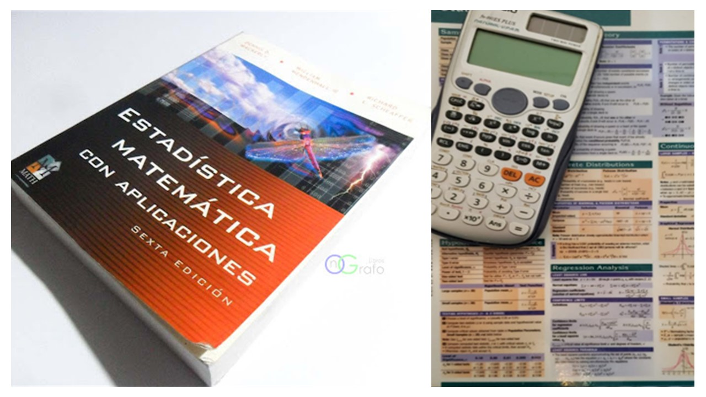
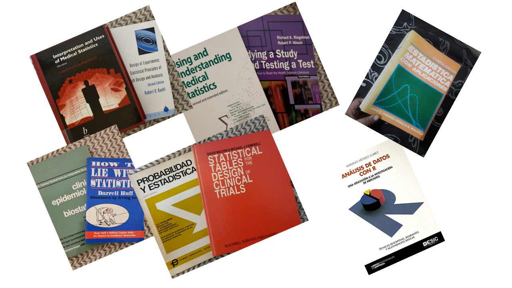
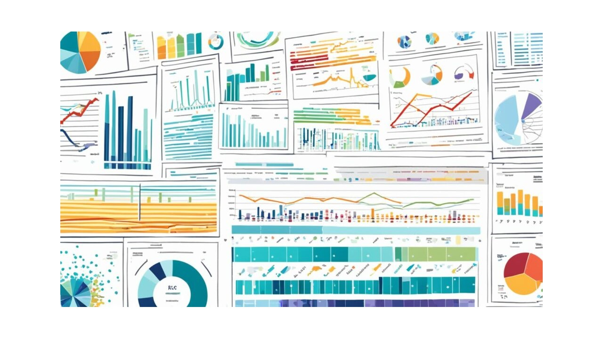

Qué Ofrecemos
Estadística del Diseño a la Publicación.
Estadística para Ciencias de la Salud.
Investigaciones y Estadísticas Clínicas.
Consultoría de Diseño

- Apoyo para elaborar el diseño que mejor se adapte a tu proyecto
- Diseño de experimentos y protocolos de investigación
- Investigación básica, clínica y evaluación de factibilidad
- Cálculo del tamaño muestral
- Generación de listados para asignación de grupos
- Muestreo y asignación aleatoria:
- Aleatorización simple
- Por bloques
- Estratificada
- Diseño de muestreos específicos
- Diseño, validación y análisis de encuestas
- Diseño de estudios de farmacoeconomía
Preparación, Optimización y Mantenimiento

- Bases de datos: Access, Google Database
- Planillas de cálculo: Excel y otras
- Software estadístico: R, SPSS, Statistica, Infostat, Epi Data, Epi Info
- Aplicaciones para el manejo racional de resultados
Consultoría Estadística

- Selección de pruebas estadísticas y protocolos de análisis
- Estadística descriptiva:
- Media, desvío estándar, error estándar, intervalo de confianza
- Mediana, rango intercuartilo, mínimo, máximo
- Presentación de resultados:
- Texto, tablas, gráficos, banners, videos
- Simples o complejos
- Uni o multivariados
- Bi o tridimensionales
Estadística Inferencial – Pruebas Estadísticas

- Pruebas paramétricas y no paramétricas
- Comparación de muestras independientes o apareadas
- Test T de Student, ANOVA, Wilcoxon
- Modelos de regresión: lineal, no lineal, logística
- Análisis de supervivencia: Kaplan-Meier, Cox, Log-Rank
- Pruebas diagnósticas: sensibilidad, especificidad, curvas ROC
- Modelos predictivos, descriptivos, de decisión, farmacoeconómicos
Redacción y Presentación de Resultados
- Revisión de presentaciones
- Informes finales para congresos, publicaciones, tesis
- Artículos científicos/técnicos en español o inglés
- Traducción especializada en portugués, francés, italiano y alemán
- Dominio del lenguaje técnico y jerga científica
Apoyo en Lectura Crítica y Revisión Metodológica
- Revisión sistematizada de manuscritos científicos
- Lectura crítica de publicaciones
- Revisión de protocolos y presentaciones
- Confección de trabajos para:/li>
- Comunicaciones y posters
- Tesis doctorales y postdoctorales
- Revistas con referato
- Capítulos de libros